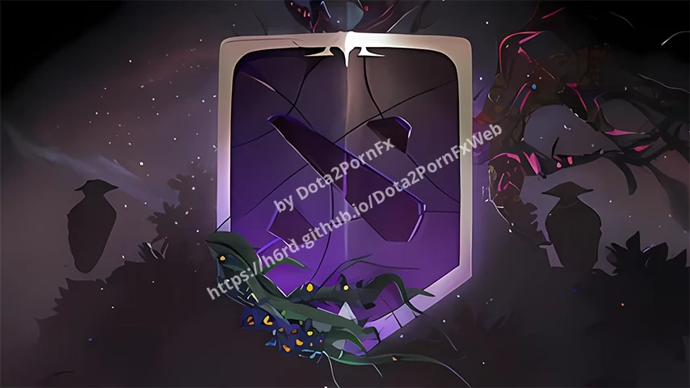
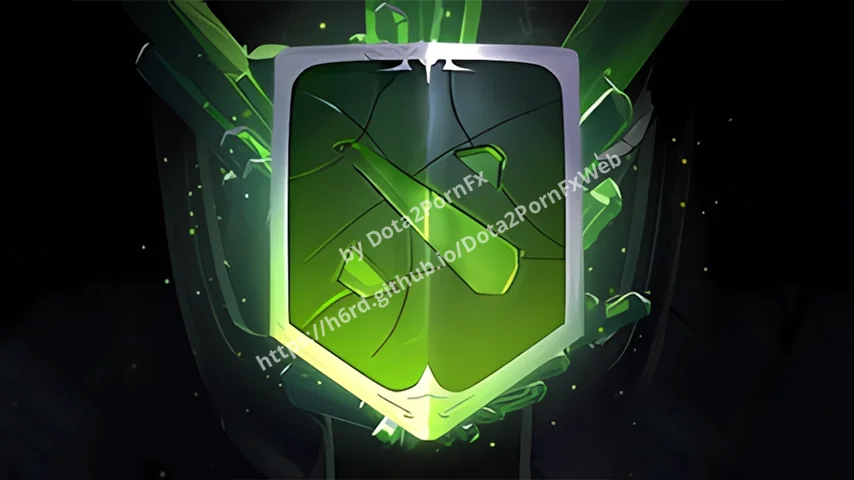
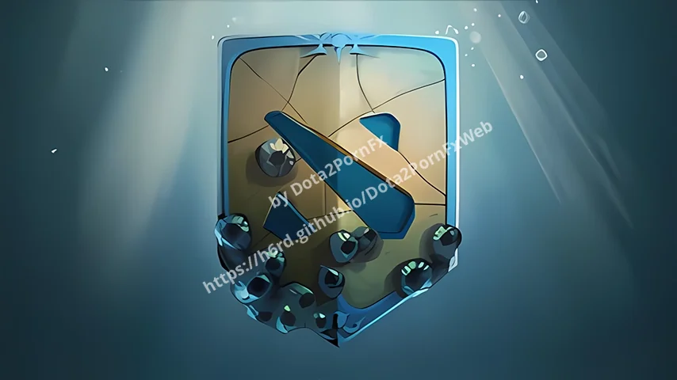
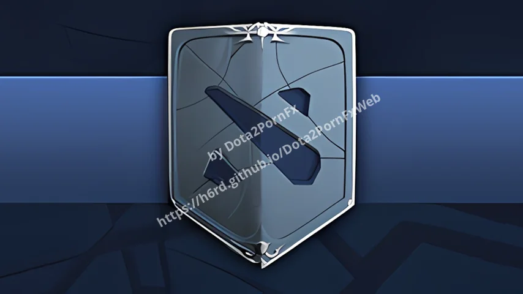
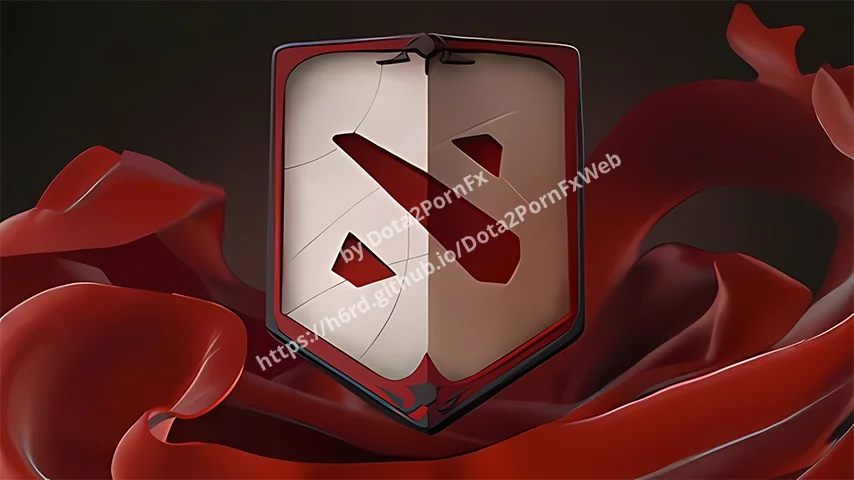
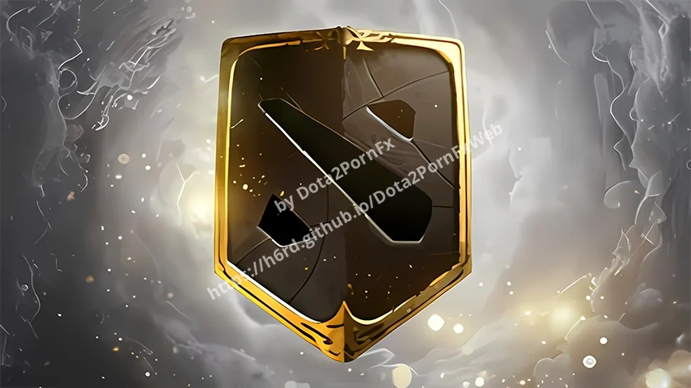
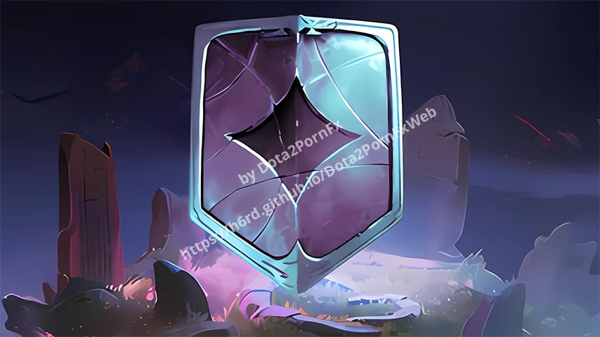
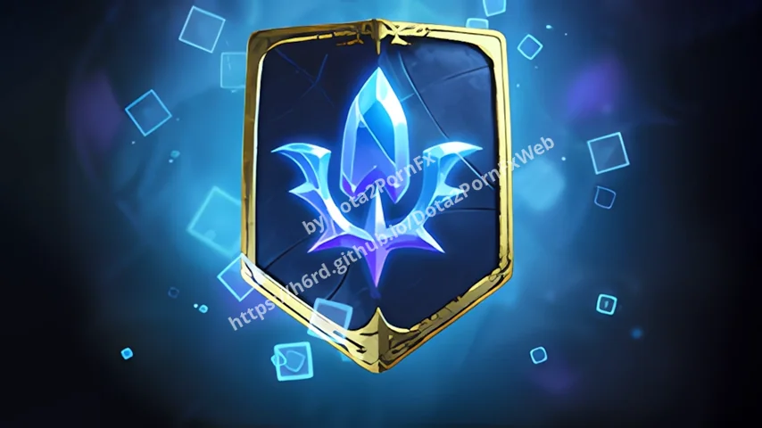

Dota 2 Effect Packs
Battle Pass / The International / Pack effects.
 Remove Seasonal Effects
Remove Seasonal Effects
TI 2019 Battle Pass
TI 2018 Battle Pass
TI 2017 Battle Pass
Winter 2016 Battle Pass
TI 2016 Battle Pass
TI 2010 Battle Pass
Nemestice 2021 Battle Pass
Aghanims Labyrinth Battle Pass Quarteros Curios
Quarteros Curios Purple Quarteros Curios
Purple Quarteros Curios Winter Quarteros Curios
Winter Quarteros Curios Spring Quarteros Curios
Spring Quarteros Curios Summer Quarteros Curios
Summer Quarteros Curios Battle Pass 2022
Battle Pass 2022